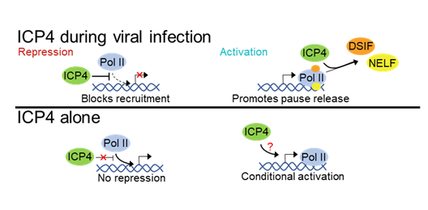
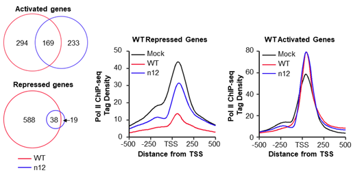

Summary
RNA Polymerase II (Pol II) is the enzyme responsible for transcribing DNA into protein-encoding mRNAs in mammals. Upon Herpes Simplex Virus-1 infection (HSV-1), there is massive transcriptional reprogramming of the host genome. Our lab discovered that this loss of mRNA levels upon infection is due to the reduction of Pol II on the host genome during HSV-1 infection. I, and others, have shown that the immediate early viral protein called ICP4 is a master regulator of Pol II occupancy on the host genome during infection. My work identifies a novel activity of ICP4 during infection.

ICP4 controls Pol II occupancy genome-wide during infection, but is not sufficient to control host transcription in the absence of infection.
Details
I have performed total Pol II ChIP-seq (chromatin immunoprecipitation followed by deep sequencing) in mock infected cells, WT HSV-1 infected cells, and n12 HSV-1 infected cells, a virus strain that codes for a truncated, non-functional ICP4, to look at changes in Pol II occupancy during infection and the role of ICP4. Total Pol II ChIP-seq correlates nicely with transcriptional activity and allows us to use differential expression software to identify genes that are activated or repressed during infection. Infection with WT HSV-1 activated and repressed hundreds of genes. Infection without ICP4 changed the set of genes that are activated upon infection and greatly reduces the number of genes repressed during infection.

Left: Differential gene expression results. Middle & Right: Pol II occupancy for WT repressed genes (middle) or activated genes (right) in the three infection conditions.
With my ChIP-seq data, I discovered that ICP4 regulates promoter proximal pausing on activated genes but not repressed genes during infection. ICP4 does so by promoting the transition of paused Pol II into elongation. I found that the occupancy of NELF on activated genes decreased during WT infection, but not n12 infection. This suggests that ICP4 regulates promoter proximal pausing by reducing the residence time of the pausing factor NELF.
ICP4 decreases NELF occupancy on activated genes during infection.
I have also looked at the effect of the exogenous expression of ICP4 in HEK 293 cells in the absence of infection. I used flow cytometry and luciferase assays to show that exogenous ICP4 alone cannot recapitulate changes in host transcription seen during infection. ICP4 does not rely on specific promoter elements or its own DNA binding motif and its activity may be sensitive to the chromatin state of the gene. This could mean: 1) other viral proteins are necessary to help ICP4 control host transcription; 2) the presence of viral DNA is necessary to act as a sink for transcription machinery; 3) the stress due to infection modulates ICP4 activity; or 4) ICP4 activity could be sensitive to the copy number of ICP4 present during infection.
Mouse B2 ncRNA is transcribed from B2 SINEs and its expression is highly activated upon cell stress, including heat shock and viral infection. B2 RNA binds to Pol II in its active site cleft blocking the ability of Pol II to associate with promoter DNA thus repressing transcription. Pol II can extend the 3’ end of B2 RNA by 18 nt in a template specific manner to generate extended B2 RNA (eB2 RNA). eB2 RNA/Pol II complexes are less stable than B2 RNA/Pol II complexes, meaning extension of B2 RNA could act as a mechanism to derepress transcription. Additionally, since B2 SINEs are retrotransposable elements, it is possible that extension of B2 RNA acts to block retrotransposition during periods of high B2 RNA expression.
B2 RNA binds to Pol II to repress transcription. Pol II then extends B2 RNA to create eB2 RNA thereby derepressing transcription.
The B2 RNA sequence has greater than 350,000 copies in the mouse genome. These can be found in mRNA UTRs and introns in addition to
bona fide B2 RNA. This makes amplification-based experiments incredibly challenging to perform in the context of the mouse genome. To simplify experiments, I opted to use a human cell culture system to investigate the effect of extension on retrotransposition in the genome, RNA localization, and RNA stability. Human cells do not have the B2 SINE sequence anywhere in the genome meaning any signal above background comes from
bona fide B2 RNA.
To that end, I generated and validated a system to study mouse B2 RNA and eB2 RNA in HEK 293 and U2OS cells. B2 and eB2 RNAs are expressed from a human Pol III driven U6 promoter and are expressed to the correct size, have the correct 5’-ends, and have the correct 3’ structure as determined by northern blots, primer extension, and RNase R treatment, respectively.
RNA FISH for a small ncRNA (<200 nt) is incredibly challenging due to the limited sequence space available for probe hybridization; modern-day smRNA FISH does not work for B2 RNA. Furthermore, the 5’ end, 3’ end, and internal stem loops of B2 RNA, where aptamer domains could be added, are all integral for B2 RNA biology. Therefore, I optimized a system that uses a singly fluorescently labeled DNA oligo. Preliminary RNA FISH experiments suggest that B2 RNA is excluded from the nucleus. The immediate goals of this project are to increase signal over background, identify if B2 and eB2 RNAs localize into specific organelles, then determine how cell stress alters RNA localization.
Another aspect of this project aims to identify proteins that preferentially bind to eB2 RNA and not to B2 RNA (see “Activity X” above). A previous graduate student in the lab performed mass spectrometry experiments and identified several proteins. I performed EMSAs with
in vitro transcribed RNA and commercially available proteins to validate the MS hits.
As an undergraduate, I started working in the lab of Dr. Mary Watson with Dr. Srimoyee Dasgupta at the University of Delaware. In Dr. Watson's lab, I primarily created various isochroman acetals to optimize and understand a reaction to create diaryl tetrasubstituted stereocenters enantioselectively. Our work has been published in Angewandte Chemie if you'd like to learn more!
The chemistry and biochemistry department at UD did not have an undergraduate biochemistry lab class. Therefore, I opted to switch from Dr. Watson's lab to the lab of Dr. Brian Bahnson and later became co-mentored by Dr. Catherine Grimes. In their lab, I worked towards creating a bacterial expression system for the human protein NOD1, which recognizes fragments of bacterial peptidoglycan to initiate the innate immune response. The end goal of this project was to solve the crystal structure of NOD1 under the direction of Dr. Mackenzie Smith. A huge shout out to Dr. Tara Gonzalez for being a second mentor to me!
Image from D'Ambrosio et. al https://doi.org/10.1016/j.bmcl.2019.03.010
While I was unable to obtain protein crystals while an undergraduate, we created the first bacterial expression system for NOD1. We were able to perform circular dichroism to confirm that NOD1 was folded, and peptidoglycan pulldown assays and kinase assays to confirm that the purified NOD1 had activity. With the recent advancements in Cryo-EM technology, I'm hopeful that structures of NOD receptors will come out soon!
I like to include a section about my undergraduate research because of how transformative of an experience it was for me. While I'm not actively using the techniques I learned in these labs, I learned a lot about what it takes to be a successful scientist and to persevere through the lows and celebrate the highs.


.jpg)